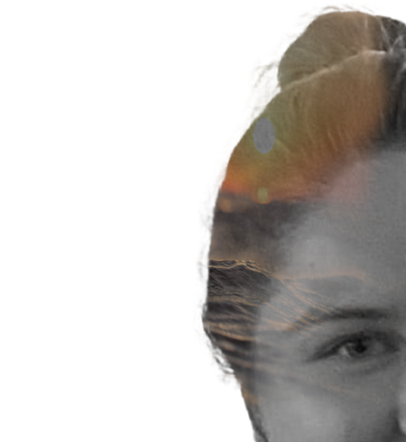
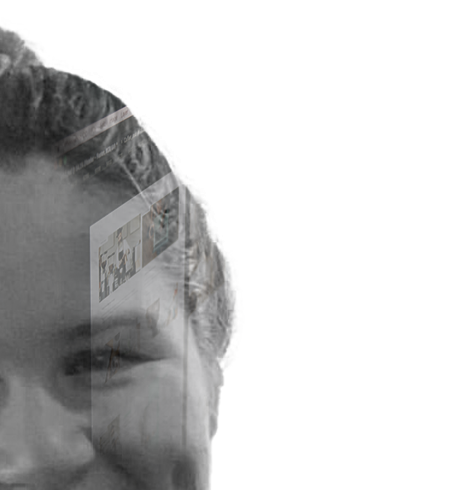

Zoals je misschien al hebt gemerkt in mijn portfolio, ben ik helemaal weg van de zee. Al van kleins af aan ging ik met mijn gezin naar de kust, en die liefde is alleen maar groter geworden. De rust die de zee uitstraalt, vind ik echt magisch. Ik kan uren zitten kijken naar de golven die op het strand breken. En een strandwandeling maken met mijn hond? Dat is zowel voor hem als voor mij puur genieten.
In het derde en vierde middelbaar volgde ik de richting Grafische Media. Tijdens deze opleiding kreeg ik verschillende designvakken, wat ik heel leuk vond. Deze vakken leerden me om op een andere manier naar dingen te kijken en mijn creativiteit verder te ontwikkelen. Omdat het voor mij soms toch iets te creatief werd en niet genoeg coderen, besloot ik om in het vijfde middelbaar de richting IT & Netwerken te volgen.
In het vijfde middelbaar besloot ik de richting IT & Netwerken te volgen. In deze richting leerde ik meer logisch nadnekne en oplossend denken. Ik vond dit heel interessant en besloot om in het zesde middelbaar af te studeren in deze richting.
Tijdens mijn opleiding Grafische Media had ik ook een vak beeld en geluid waarin we regelmatig buiten de school mochten gaan fotograferen. Tijdens dit vak heb ik ook verschillende methoden ontdekt om momenten mooier vast te kunnen leggen.